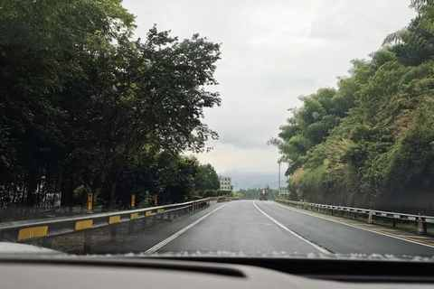
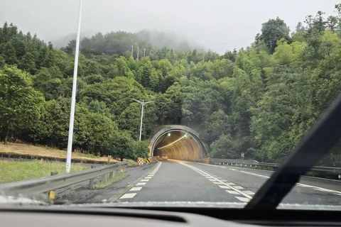
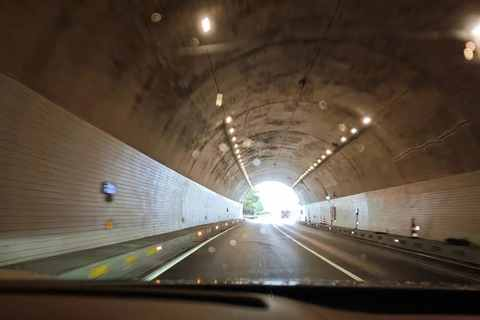
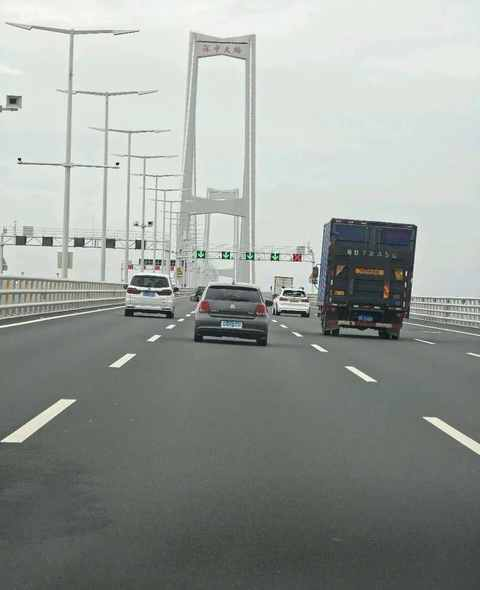
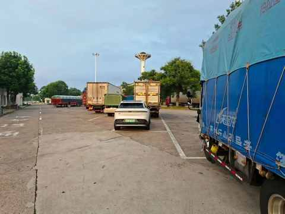
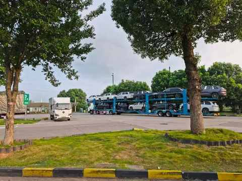
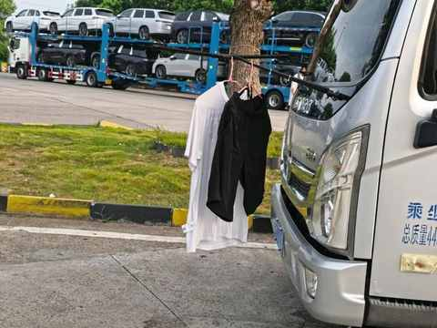
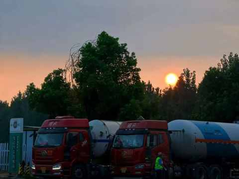

纯电车自驾游： 6 天 3300km 之后有了 5 个感受

一、 山真多
在路上的时候，能具体的理解和感受 中国的地理条件：山地多平原少。
学生时期学习地理知识的时候，只对身边的地貌有一些认识，而且很熟悉不会有太多感受和感官上的刺激。
这次，至少有 2000km 以上的路程是在山区行驶，哪哪都是山。
脑海中会不由自主的冒出来一些词汇：美不胜收、心旷神怡、层峦叠嶂、连绵不绝、鬼斧神工……



路两边和远处是山连着山，路上是隧道一个接着一个，路过不少革命老区：南昌、瑞金、寻乌……
二、辅助驾驶让开车没那么累
与我而言，纯电车让开车不那么累已经是超出预期的体验。
① 要想开车不累，先决条件是把座椅调节好，适合自己的长时间乘坐。
② 辅助驾驶顾名思义就是打辅助的而已，开启之后必须得手握方向盘+目视前方，同时密切观察路况。
③ 如果是不常开车的新手司机，一定要谨慎开启辅助驾驶，因为遇到紧急情况可能对切换成自主驾驶的时机判断不准。
④ 使用辅助驾驶最重要的意义是在于：在开车的过程中，无需一直保持神经高度紧张的状态，身体和精神上都能舒缓不少，还能时不时吐槽下辅助驾驶开的不够好释放些许负能量。
⑤ 如果路况良好，单日里程的上限可能在 1200km 左右，也就是开车 13 个小时左右，加上休息的时间可能在 15 个小时。
三、长三角区域高速建设得很好
有一些发现与感受必须通过对比才能得到。
① 车道 3-4条 的路段多比例高
② 服务区比较大，有丰富的餐食可供选择
③ 新能源车充电桩 120kw 及以上的快充多
基本上每个服务区都有国家电网的充电桩，部分服务区有蔚来、理想或其他第三方品牌的充电桩。
四、实至名归的基建狂魔
当你连续开过几个超过 2km 的隧道，肯定会有一个巨大的疑问：这些隧道是怎么挖的，又是如何建设的。


五、长途自驾在高速服务区过夜可行
纯电车的优势之一：能放心大胆的开一晚上空调，实测一晚上耗电 4 度。
① 选择一个有司机之家的服务区
② 避开灯光过亮的区域，停在靠近卫生间和水池的地方
③ 附近最好有不多不少过夜的货车




首次在服务区过夜，睡得并不是很舒服，但着实是崭新的体验。
但下次在服务区过夜吗，会准备的更充分一点，睡眠质量肯定能再上升一个档次。